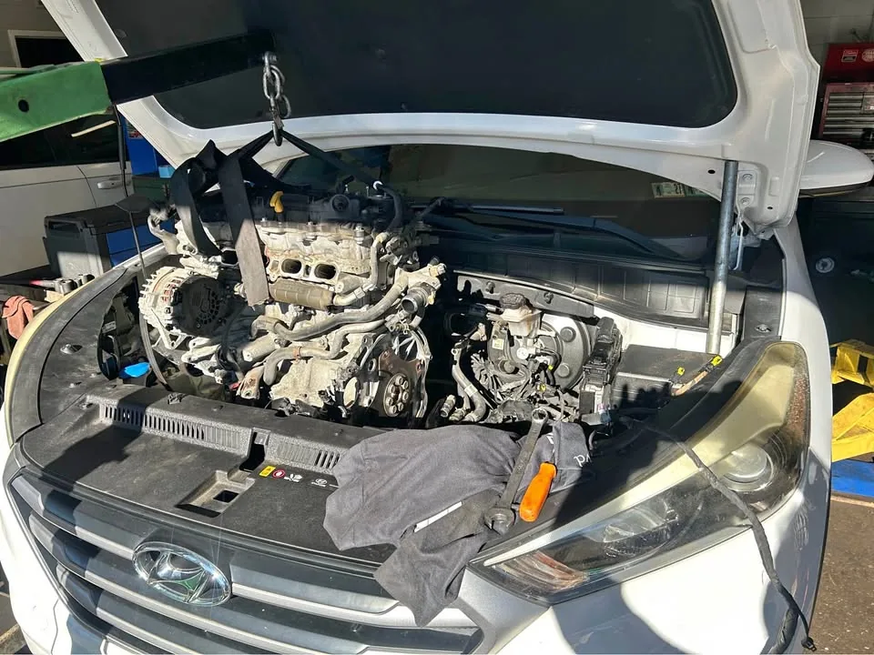
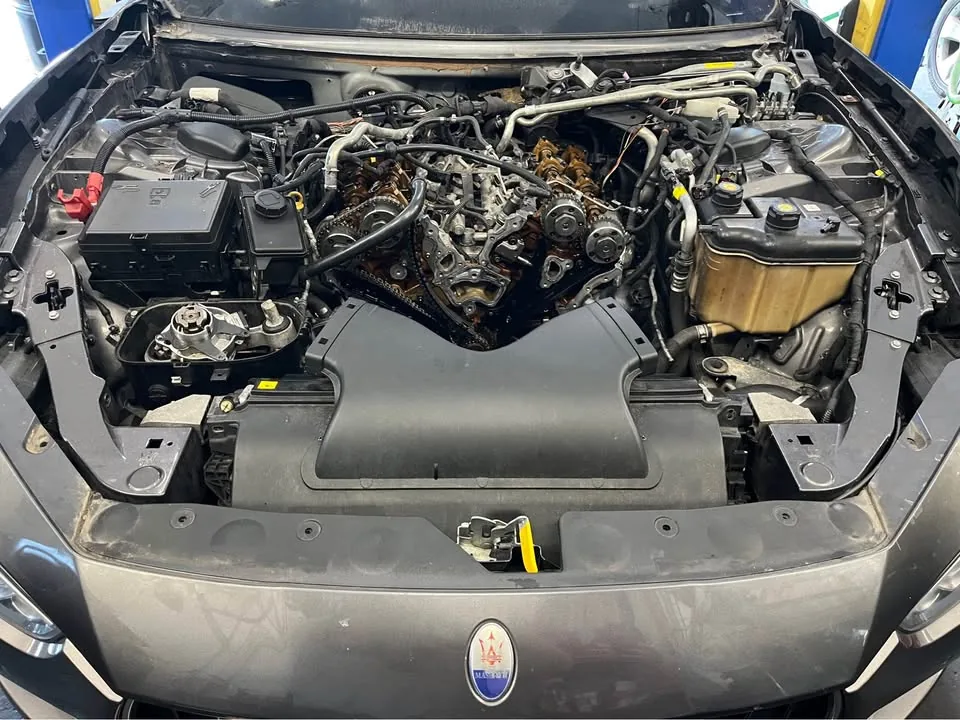
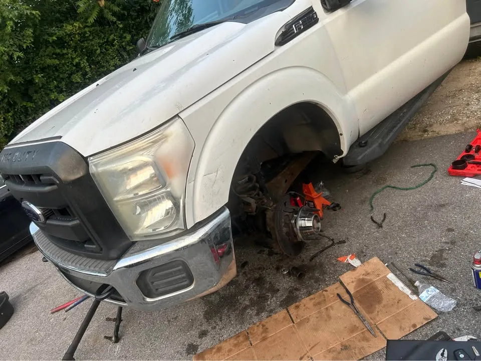
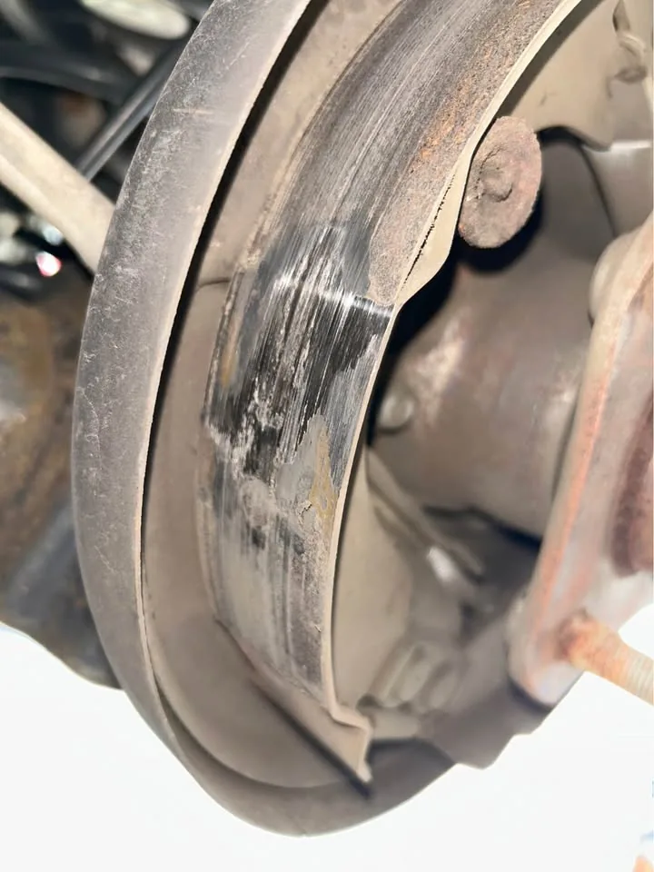
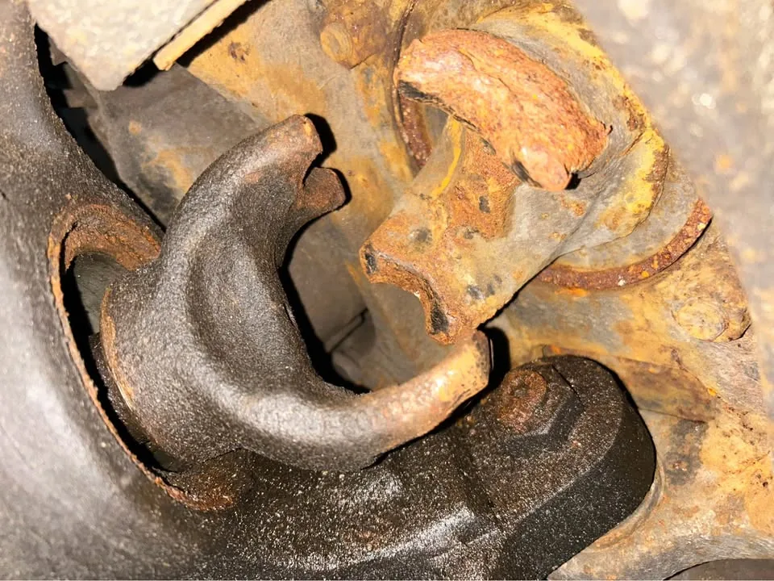
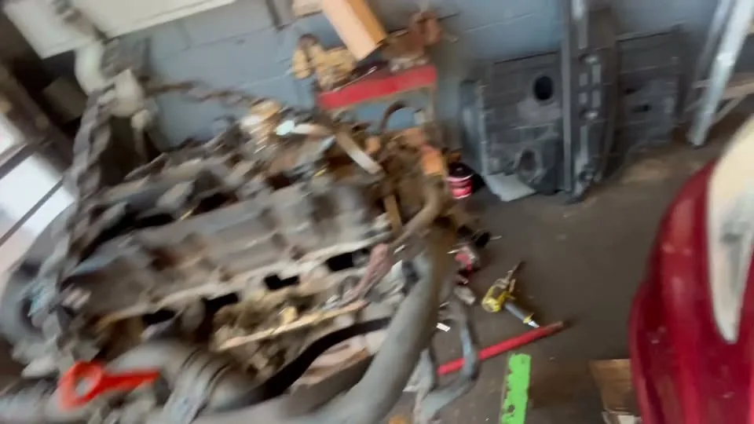
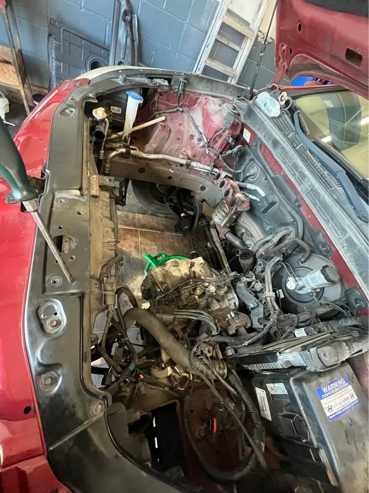
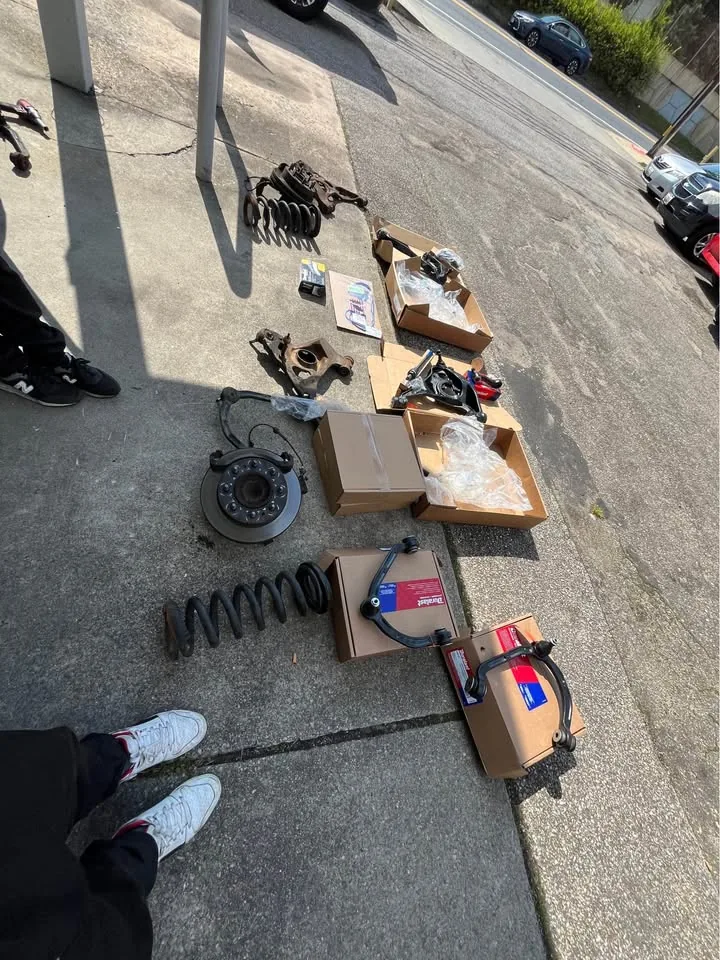
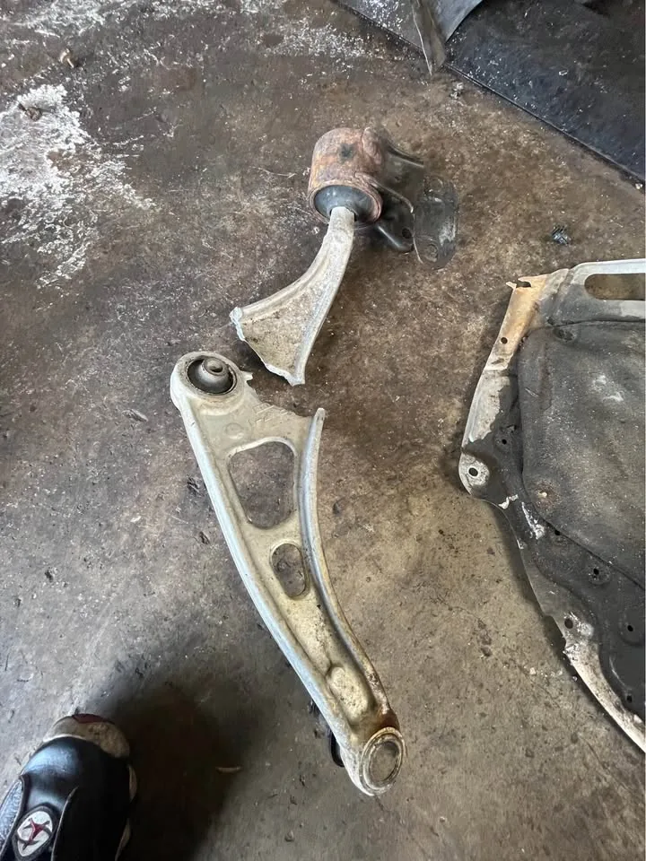
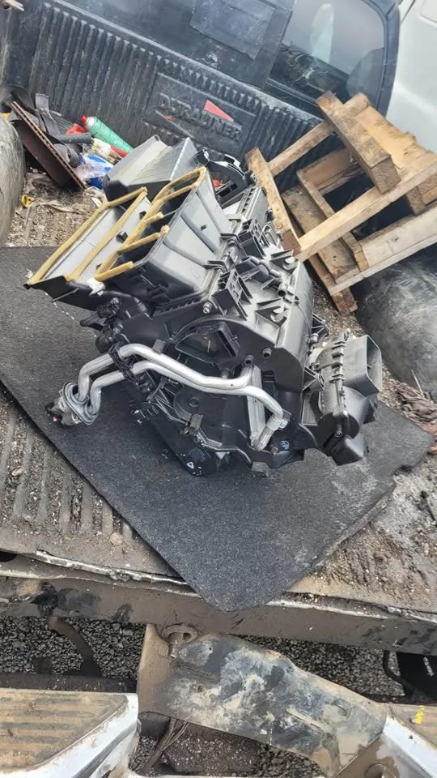

Your car.
Your location.
Our work.
From a brake issue to a serious engine repair, Jaziel Mobile Mechanic comes to you. Straightforward service for drivers across Baltimore and nearby communities.

What needs fixing?
Whether it's routine maintenance or a bigger job, tell us what your car is doing and we'll discuss the best next step.
Timing & general repairs
Timing jobs and other mechanical repairs. Ask about your specific vehicle.
Proof is in the work.
Real photographs and footage shared directly by the business. No generic stock photos, no invented stories.


A closer look at an engine job.
Real footage of an engine being moved out during a repair. Tap to play, with sound controls.







Simple from the start.
Tell us the issue.
Send your vehicle details, what is happening, and where you're parked.
Discuss the job.
We can talk through the service needed and confirm availability.
Get it handled.
Schedule the visit and get the work done at your location when appropriate.
All around Baltimore.
Mobile auto repairs across Baltimore and the surrounding Maryland communities. Text your ZIP code to check your location.
Check my ZIP codeLet's get your car running.
Four quick details. We'll prepare a text you can send directly to Jaziel Mobile Mechanic, with everything needed to discuss the repair.
(443) 500-6987Common questions.
Which makes and models do you work on?+
Jaziel says he works on all makes and models. Share your vehicle year, make, and model so he can discuss your specific repair.
What areas do you serve?+
Baltimore, Glen Burnie, Catonsville, Lansdowne, Ellicott City, Brooklyn, and Pasadena, Maryland. Ask to confirm your specific address.
Can you handle serious engine repairs?+
Timing jobs and general repairs are among the advertised services. Whether a particular repair can be completed at your location will be confirmed first.
How much does a repair cost?+
Prices depend on the vehicle and job. Call or text details to discuss the scope and pricing.
Do you offer same-day appointments?+
Availability has not been confirmed. Please call or text to check the schedule.